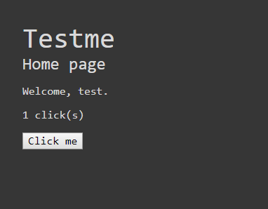

Introduction
Bienvenue sur la session de Coding Dojo à propos du testing !
Prérequis
- Python 3 et pip (au moins 3.6)
- Google Chrome
- Un terminal
Voici le plan
Section 1 - Installation
Prérequis
- Python 3 et pip (au moins 3.6)
- Google Chrome
- Un terminal
1. Préparation
Pour commencer, on va installer tout ce qu'il faut.
Pour utiliser des paquets Python sans écraser l'environnement système, on va utiliser un virtualenv. Un virtualenv est une sorte d'installation Python indépendante, avec ses propres paquets.
Voici ce qu'il faut taper:
> pip install virtualenv
Ensuite, la création de ce virtualenv:
> virtualenv -p python3 ./venv
Une fois le virtualenv crée, il faut l'activer:
# Pour Windows, sous Powershell
> ./venv/Scripts/activate.ps1
# Pour Windows, sous cmd
> ./venv/Scripts/activate.bat
# Pour Linux
> source ./venv/bin/activate
Une fois dans le virtualenv, le prompt de la console va changer avec le texte (venv) devant.
# Exemple avec Powershell
(venv) PS C:\.....> _
D'ici, on peut installer les paquets nécessaires:
> pip install -r requirements.txt
2. Chromedriver
On va aborder les tests end-to-end lors de ce dojo, et pour ce faire on va utiliser l'outil selenium (rapatrié dans les requirements).
Selenium va piloter une instance de navigateur via son webdriver. Dans le cadre de ce dojo, on va se concentrer sur Google Chrome et sur le chromedriver.
Voici un lien vers chromedriver 2.46.
Il faut ensuite le décompresser dans un emplacement accessible depuis un terminal (dans le PATH). Pour faire simple, j'ai juste mis le driver dans C:\Windows\system32, un peu sale mais fonctionnel.
Pour tester, tapez chromedriver depuis cmd ou Powershell, ça devrait fonctionner.
3. Documentation
Pour la documentation autour de pytest, je recommande:
- le site officiel
- la doc du module pytest-django
- le livre TDD with Python, pour un guide complet autour du testing en Python
- et le livre Python Testing with pytest, pour un guide autour de Pytest
Section 2 - Les types de tests
Avant de commencer à tester, on va voir différents types de tests (plus d'infos sur le wiki).
1. Tests unitaires
Les tests unitaires se chargent de vérifier le comportement d'une fonctionnalité à la fois, en essayant de tester chaque branche du code. Ils sont censés être concis et exhaustifs, en restant limités en scope.
Ce sont les tests les plus simples à écrire: puisque le scope est par définition limité, il n'y a pas de dépendance forte avec le reste du code.
def test_simple():
assert "a" * 5 == "aaaaa"
2. Tests d'intégration
Les tests d'intégration se chargent de vérifier les communications entre plusieurs modules du code et voir si tout tourne bien ensemble. Ils sont plus longs mais plus pertinents car on peut décrire des cas d'utilisation.
Ils sont plus complexes à rédiger: en fonction des cas, il peut être nécessaire de préparer une "situation" de test en amont, en utilisant plus de code que nécessaire pour le test en lui même. Par exemple, sur un test portant sur la création d'une réservation, il faut au préalable: un cloud, un utilisateur, une ressource, et une adresse. Heureusement, avec pytest il est assez simple d'écrire très peu de code pour ne se concentrer que sur le test à l'aide d'un outil très utile: les fixtures.
def test_integration(dependency1, dependency2):
result = dependency1.execute(dependency2.value)
assert result == "some_value"
3. Tests end-to-end
Les tests end-to-end vérifient le comportement d'une application dans sa globalité, en mode boîte noire. Le plus souvent, on passe par des outils comme selenium qui nous apporte une API autour d'un navigateur, pour exécuter des actions comme appuyer sur un bouton, récupérer un élément du DOM et vérifier des comportements. Ce sont les plus longs et les plus compliqués à écrire, mais ça permet de faire des tests qui se rapprochent du comportement d'un utilisateur en face de son appareil.
Ces tests ne remplacent pas tous les tests fonctionnels réalisés "à la main", mais ils peuvent être très utiles pour automatiser certaines tâches répétitives.
def test_e2e(browser):
browser.navigate_to("/toto")
assert browser.check_url("/toto")
element = browser.find_element_by_css_selector("#my-elem")
assert element.value == "my-value"
Section 3 - L'outil Pytest
Pour ceux qui connaissent déja le module unittest fourni de base avec Python, vous vous demandez sûrement pourquoi pytest et pas unittest ?
C'est ce qu'on va voir tout de suite, et on peut commencer par l'article de Sam & Max: http://sametmax.com/un-gros-guide-bien-gras-sur-les-tests-unitaires-en-python-partie-3/.
On va travailler dans le dossier examples/simple.
1. Ecrire un test
Pour écrire un test, il suffit de créer un fichier qui commence par "test_" dans le dossier "tests": par exemple, "test_me.py".
Dans ce fichier, les fonctions commençant par "test_" seront exécutées en tant que cas de test.
Dans unittest, il y a plusieurs façons de faire des assertions:
self.assertTrueself.assertFalseself.assertEqualself.assertNotEqualself.assertIsself.assertIsNot- ...
C'est un style populaire pour réaliser des assertions, car il permet à première vue de tester énormément de choses (et permet d'avoir plus d'infos quand le test échoue). Pytest lui n'a qu'une fonction d'assertion:
assert
Là comme ça, ça a l'air un peu limité, mais avec assert on peut tester n'importe quoi, il suffit de lui passer une expression booléenne.
Exemple de fonction de test:
def test_reverse():
assert "azerty"[::-1] == "ytreza"
Un autre test:
def ma_fonction(a):
return a * a
def test_ma_fonction():
assert ma_fonction(1) == 1
assert ma_fonction(5) == 25
Exemple d'exécution de pytest:
(venv) PS C:\Users\...\simple> pytest
=============================================== test session starts ====================================================
platform win32 -- Python 3.7.1, pytest-4.3.1, py-1.8.0, pluggy-0.9.0 -- c:\users\...\python.exe
cachedir: .pytest_cache
rootdir: C:\Users\...\simple, inifile: pytest.ini
plugins: pythonpath-0.7.3, django-3.4.8, cov-2.6.1
collected 1 item
tests/test_simple.py::test_simple PASSED [100%]
=============================================== 1 passed in 0.03 seconds ===============================================
(venv) PS C:\Users\...\simple>
2. La gestion des erreurs
Là où unittest utilise des fonctions précises pour avoir de bons retours d'erreurs, on pourrait croire que pytest est moins bon avec son assert unique.
Mais non:
(venv) PS C:\Users\...\simple> pytest tests/test_simple.py::test_error
========================================================== test session starts ==========================================================
platform win32 -- Python 3.7.1, pytest-4.3.1, py-1.8.0, pluggy-0.9.0 -- c:\users\...\python.exe
cachedir: .pytest_cache
rootdir: C:\Users\...\simple, inifile: pytest.ini
plugins: pythonpath-0.7.3, django-3.4.8, cov-2.6.1
collected 2 items
run-last-failure: rerun previous 1 failure first
tests/test_simple.py::test_error FAILED [ 50%]
=============================================================== FAILURES ================================================================
______________________________________________________________ test_error _______________________________________________________________
def test_error():
> assert {"a": 1, "b": 5} == {"a": 2}
E AssertionError: assert {'a': 1, 'b': 5} == {'a': 2}
E Differing items:
E {'a': 1} != {'a': 2}
E Left contains more items:
E {'b': 5}
E Full diff:
E - {'a': 1, 'b': 5}
E + {'a': 2}
tests\test_simple.py:9: AssertionError
======================================================= 1 failed in 0.09 seconds ========================================================
(venv) PS C:\Users\...\simple>
Pytest nous explique directement ce qui ne va pas. Il permet même de nous montrer l'état des variables de la fonction:
(venv) PS C:\Users\...\simple> pytest tests/test_simple.py::test_variables_error
========================================================== test session starts ==========================================================
platform win32 -- Python 3.7.1, pytest-4.3.1, py-1.8.0, pluggy-0.9.0 -- c:\users\...\python.exe
cachedir: .pytest_cache
rootdir: C:\Users\...\simple, inifile: pytest.ini
plugins: pythonpath-0.7.3, django-3.4.8, cov-2.6.1
collected 1 item
tests/test_simple.py::test_variables_error FAILED [100%]
=============================================================== FAILURES ================================================================
_________________________________________________________ test_variables_error __________________________________________________________
def test_variables_error():
a = 1
b = 1
result = 3
> assert a + b == result
E assert 2 == 3
E -2
E +3
a = 1
b = 1
result = 3
tests\test_simple.py:17: AssertionError
======================================================= 1 failed in 0.09 seconds ========================================================
C'est quand même super pratique !
3. Les fixtures
a. C'est quoi ?
Sur des tests simples, il n'y a pas grand chose à écrire, du coup c'est concis et rapide. Sur des cas plus complexes, on peut avoir besoin de créer énormément de choses au préalable (surtout côté tests d'intégration).
Pour limiter le code nécessaire à la création des scénarios, pytest propose une fonctionnalité super utile: les fixtures.
Ceux qui connaissent déja un peu le monde du testing savent déjà ce qu'est une fixture côté base de données: ce sont des données à charger en DB avant l'exécution des tests. Dans le cas de pytest, les fixtures sont différentes. Ce ne sont pas nécessairement des "données", et ce n'est pas nécessairement placé en base de données.
Via les fixtures, on peut par exemple:
- automatiser la désactivation du SMTP pour empêcher l'envoi de mail dans chaque fonction,
- monkeypatcher certaines fonctions avant de démarrer un test,
- automatiser la création d'un cloud avant chaque test,
- créer un navigateur via selenium avant de commencer un test e2e,
- préparer un environnement où l'on crée une resource et un utilisateur pour pouvoir faire des réservations,
- on peut faire n'importe quoi finalement.
Voici comment on déclare et appelle une fixture:
import pytest
@pytest.fixture
def ma_fixture():
return {
"a": 5,
"b": 6
}
def test_ma_fixture(ma_fixture):
assert ma_fixture == {"a": 5, "b": 6}
b. Ça va où ?
Ces fixtures sont stockées à plusieurs endroits possibles:
- dans un ou plusieurs fichiers
conftest.py(un fichier possible par path) - directement dans un module de test
test_*.py
En fonction de la position d'un module de test, les fixtures seront chargés au fil du parcours de l'arborescence pour aller jusqu'a ce test.
Exemple:
- tests/
- a/
- conftest.py
- b/
- conftest.py
- test_toto.py
- b/
- test_tutu.py
- conftest.py
- a/
Sur cet exemple:
- le module
test_toto.pyva charger les fixtures des fichiersconftest.pydetests/,tests/a/,tests/a/b/,
- alors que le module
test_tutu.pyva charger les fixtures des fichiersconftest.pyde:tests/, c'est tout.
c. Les scopes
Les fixtures peuvent avoir plusieurs "scopes".
- Le scope
session: la fixture va s'exécuter une seule fois avant toute la session de test- C'est utile pour les tâches qui prennent du temps, comme créer la DB avec mise en place des migrations
- Ou encore démarrage d'un serveur en arrière plan pour les tests e2e
- Le scope
module: pour un module (un fichier python), la fixture ne va s'exécuter qu'une seule fois par module.- C'est utile lorsque plusieurs tests nécessitent le même environnement au préalable: comme la création d'un cloud et d'une ressource pour faire plusieurs tests.
- Le scope
class: moins utilisé surpytest, mais si vous voulez utiliser des classes comme avecunittest, ça revient à déclarer une fonctiontearDownetsetUpdans la classe.- En pratique on n'aura pas besoin de s'en servir, les 3 autres scopes sont plus flexibles.
- Le scope
function: c'est le scope par défaut, la fixture s'exécute avant le démarrage d'une fonction en particulier
Voici des exemples:
# Exemples
@pytest.fixture(scope="session")
def session_fixture():
return {
"session_key": 1234
}
@pytest.fixture(scope="module")
def module_fixture():
return {
"module_key": 7890
}
@pytest.fixture
def function_fixture():
return {
"function_key": 1902
}
def test_fix1(session_fixture, module_fixture, function_fixture):
# session_fixture va se créer
# module_fixture va se créer
# function_fixture va se créer
pass
def test_fix2():
# session_fixture existe déja
# module_fixture existe déja
# function_fixture va se créer
pass
d. Setup & Teardown
Maintenant que vous savez comment construire une fixture (à la setUp côté unittest), vous vous demandez sûrement comment gérer sa destruction (tearDown) ?
Avec une fixture classique, on ne peut que gérer la vie de la donnée avant qu'elle ne soit passée dans le test, mais pas après. Pour cela, il faut utiliser une fixture appelée yield, du nom du mot-clé Python qui permet de créer des générateurs (et des coroutines).
Je vais pas trop rentrer dans le détail, mais c'est le même principe que pour un context manager (bloc with):
from contextlib import contextmanager
@contextmanager
def mon_bloc():
# On déclare une variable
ma_var = 5
print("avant bloc")
# On "envoie" la variable à l'extérieur du générateur
yield ma_var
print("après bloc")
def ma_fonction():
# On appelle le context manager
with mon_bloc() as var:
# affiche "avant bloc"
print(var)
# affiche 5
# affiche "après bloc"
On va utiliser le même système pour la fixture:
import pytest
@pytest.yield_fixture
def ma_fixture():
# On déclare une variable
ma_var = "toto"
# On "envoie" la variable à l'extérieur du générateur
yield ma_var
# On peut faire une action post-fixture, comme supprimer des entrées DB
db.clear()
def test_fixture(ma_fixture):
assert ma_fixture == "toto"
# à la fin du test, va supprimer les entrées DB
Attention: La notation @pytest.yield_fixture est dépréciée: le décorateur fixture comprend désormais l'instruction yield. Il est donc préférable de directement utiliser @pytest.fixture. J'ai ici utilisé @pytest.yield_fixture pour montrer le rapport.
e. L'héritage
Il est possible de mettre en place des dépendances entre les fixtures. Par contre, attention aux scopes:
- Il n'est pas possible pour une fixture de dépendre d'un scope plus petit
- C'est à dire qu'un scope "session" ne peut pas dépendre d'un scope "function".
- Mais le contraire oui.
Voici un exemple:
@pytest.fixture(scope="session")
def mon_cloud():
return Cloud()
@pytest.fixture
def mon_user(mon_cloud):
return User(cloud=mon_cloud)
def test_fix(mon_user):
# mon_user va automatiquement utiliser mon_cloud
pass
def test_fix2(mon_user, mon_cloud):
# mon_cloud existe déja dans mon_user, ici on récupère juste une référence
assert mon_user.cloud == mon_cloud
Voici un exemple qui ne marche pas:
@pytest.fixture
def mon_cloud():
return Cloud()
@pytest.fixture(scope="session")
def mon_user(mon_cloud):
# ça va casser, mon_cloud étant d'un scope plus petit
pass
f. Bonus
Petite commande bonus: on peut afficher les étapes de "setup" et de "teardown" des fixtures lors de l'exécution des tests.
Attention c'est un peu verbeux:
(venv) PS C:\Users\...\simple> pytest --setup-show
=============================================== test session starts ================================================
platform win32 -- Python 3.7.1, pytest-4.3.1, py-1.8.0, pluggy-0.9.0 -- c:\users\...\python.exe
cachedir: .pytest_cache
rootdir: C:\Users\...\simple, inifile: pytest.ini
plugins: pythonpath-0.7.3, django-3.4.8, cov-2.6.1
collected 2 items
tests/test_scopes.py::test_fix1
SETUP S _fail_for_invalid_template_variable
SETUP S django_test_environment
SETUP S session_fixture
SETUP S django_db_blocker
SETUP M module_fixture
SETUP C _django_setup_unittest (fixtures used: django_db_blocker)
SETUP F _dj_autoclear_mailbox
SETUP F _django_clear_site_cache
SETUP F _django_db_marker
SETUP F _django_set_urlconf
SETUP F _live_server_helper
SETUP F _template_string_if_invalid_marker
SETUP F function_fixture
tests/test_scopes.py::test_fix1 (fixtures used: _dj_autoclear_mailbox, _django_clear_site_cache, _django_db_marker, _django_set_urlconf, _django_setup_unittest, _fail_for_invalid_template_variable, _live_server_helper, _template_string_if_invalid_marker, django_db_blocker, django_test_environment, function_fixture, module_fixture, session_fixture)PASSED
TEARDOWN F function_fixture
TEARDOWN F _template_string_if_invalid_marker
TEARDOWN F _live_server_helper
TEARDOWN F _django_set_urlconf
TEARDOWN F _django_db_marker
TEARDOWN F _django_clear_site_cache
TEARDOWN F _dj_autoclear_mailbox
TEARDOWN C _django_setup_unittest
tests/test_scopes.py::test_fix2
SETUP C _django_setup_unittest (fixtures used: django_db_blocker)
SETUP F _dj_autoclear_mailbox
SETUP F _django_clear_site_cache
SETUP F _django_db_marker
SETUP F _django_set_urlconf
SETUP F _live_server_helper
SETUP F _template_string_if_invalid_marker
tests/test_scopes.py::test_fix2 (fixtures used: _dj_autoclear_mailbox, _django_clear_site_cache, _django_db_marker, _django_set_urlconf, _django_setup_unittest, _fail_for_invalid_template_variable, _live_server_helper, _template_string_if_invalid_marker, django_db_blocker, django_test_environment)PASSED
TEARDOWN F _template_string_if_invalid_marker
TEARDOWN F _live_server_helper
TEARDOWN F _django_set_urlconf
TEARDOWN F _django_db_marker
TEARDOWN F _django_clear_site_cache
TEARDOWN F _dj_autoclear_mailbox
TEARDOWN C _django_setup_unittest
TEARDOWN M module_fixture
TEARDOWN S django_db_blocker
TEARDOWN S django_test_environment
TEARDOWN S _fail_for_invalid_template_variable
TEARDOWN S session_fixture
============================================= 2 passed in 0.12 seconds =============================================
(venv) PS C:\Users\...\simple>
On discerne bien toutes les fixtures utilisées, avec les scopes (S pour session, M pour module, C pour class et F pour function).
Section 4 - Aperçu de l'application
On va maintenant expérimenter sur une application Django.
Elle est disponible dans le dossier examples/web-app.
C'est une application très pauvre fonctionnellement, on peut juste s'enregistrer/se connecter et incrémenter son compteur de clicks avec un bouton.

Le but premier de cette application est d'utiliser pytest.
Pour démarrer l'application, il faut avoir chargé le virtualenv, aller dans le dossier examples/web-app puis:
python manage.py migrate
python manage.py runserver 0.0.0.0:8000
Faites le tour des fonctionnalités de l'application, puis exécutez les tests:
pytest
Vous devriez avoir un résultat de ce type, avec des tests qui plantent:
(venv) PS C:\Users\...\web-app> pytest
=============================================== test session starts ================================================
platform win32 -- Python 3.7.1, pytest-4.3.1, py-1.8.0, pluggy-0.9.0 -- c:\users\...\python.exe
cachedir: .pytest_cache
Django settings: testme_project.settings (from ini file)
rootdir: C:\Users\...\web-app, inifile: pytest.ini
plugins: pythonpath-0.7.3, django-3.4.8, cov-2.6.1
collected 10 items
run-last-failure: rerun previous 5 failures first
tests/test_api.py::test_api_addme FAILED [ 10%]
tests/test_api.py::test_api_base64me FAILED [ 20%]
tests/test_profile.py::test_profile_reset_clicks FAILED [ 30%]
tests/test_profile.py::test_profile_clicks_to_stream FAILED [ 40%]
tests/e2e/test_e2e.py::test_home
DevTools listening on ws://127.0.0.1:18187/devtools/browser/fa679536-3af4-4b06-beb9-ef09bfb9c0db
FAILED [ 50%]
tests/test_api.py::test_api_clickme PASSED [ 60%]
tests/test_profile.py::test_profile_default PASSED [ 70%]
tests/test_profile.py::test_profile_zero_clicks PASSED [ 80%]
tests/test_profile.py::test_profile_add_click PASSED [ 90%]
tests/e2e/test_e2e.py::test_login
DevTools listening on ws://127.0.0.1:18214/devtools/browser/bde370e3-4913-497b-a571-c38be8cfa536
PASSED [100%]
...
Il est possible que vos tests ne soient pas exécutés dans le même ordre, mais c'est pas bien grave.
A la suite de ces lignes de résumé, vous devez avoir un petit tas d'erreurs avec du contexte, plantant à chaque fois sur un assert False.
Prenez le temps de regarder la définition de ces tests pour bien comprendre comment tout fonctionne.
Section 5 - A votre tour
C'est à votre tour de tester !
Réparez les tests qui plantent en vous aidant des commentaires et virez les TODOs.
Hésitez pas à demander de l'aide et bonne chance !